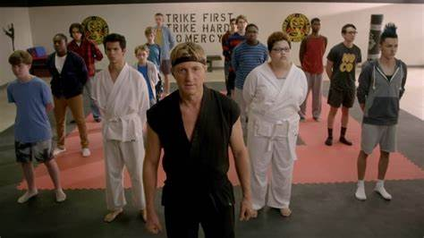
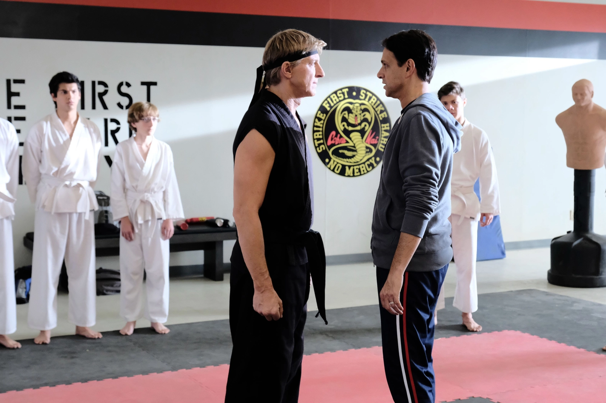
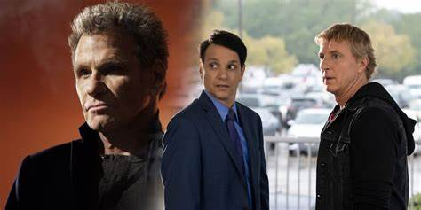
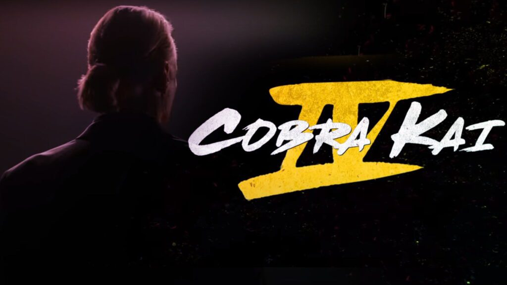

Στην 1η σεζόν, ο Ralph Macchio και ο William Zabka επανέλαβαν τους αντίστοιχους ρόλους Karate Kid των Daniel LaRusso και Johnny Lawrence. Οι πρόσθετοι ηθοποιοί του Karate Kid περιλάμβαναν τη Randee Heller, η οποία επανέλαβε τον ρόλο της ως Lucille LaRusso (η μητέρα του Daniel) και ο Martin Kove, ο οποίος αναβίωσε τον ρόλο του ως John Kreese. Η λίστα των καστ για την 1η σεζόν ανακοινώθηκε στις 24 Οκτωβρίου 2017 και περιελάμβανε τους Xolo Maridueña, Mary Mouser, Tanner Buchanan και Courtney Hengeler. Ο Ed Asner επιλέχθηκε σε έναν γκεστ ως τον λεκτικά υβριστικό πατριό του Johnny, Sid Weinberg.[38][39] Στις 19 Δεκεμβρίου 2017, η Vanessa Rubio εντάχθηκε στο καστ ως μητέρα του Miguel.
Στη 2η σεζόν, οι Ralph Macchio, William Zabka, Xolo Mariduena, Tanner Buchanan, Mary Mouser και Courtney Henggeler επέστρεψαν όλοι, με τους Jacob Bertrand, Gianni DeCenzo και Martin Kove να προωθούνται σε τακτικές σειρές και νεοφερμένους Paul Walter Hauser και Peyton List να συμμετέχουν στο εκμαγείο. Οι ηθοποιοί από το The Karate Kid, Rob Garrison (Tommy), Ron Thomas (Bobby), Tony O'Dell (Jimmy) και Randee Heller (Lucille LaRusso) έκαναν guest εμφανίσεις κατά τη διάρκεια αυτής της σεζόν.
Στην 3η σεζόν, επέστρεψαν όλοι οι Ralph Macchio, William Zabka, Xolo Mariduena, Tanner Buchanan, Mary Mouser και Courtney Hengeler. Οι ηθοποιοί των The Karate Kid και The Karate Kid II, Elisabeth Shue (Ali Mills), Ron Thomas (Bobby), Tamlyn Tomita (Kumiko), Traci Toguchi (Yuna) και Yuji Okumoto (Chozen Toguchi) έκαναν όλοι guest εμφανίσεις κατά τη διάρκεια αυτής της σεζόν. .
Στην 4η σεζόν, η Vanessa Rubio και η Peyton List προήχθησαν σε τακτικές σειρές, ενώ οι Dallas Dupree Young και Oona O'Brien έπαιρναν επαναλαμβανόμενους ρόλους. Επιπλέον, ο Thomas Ian Griffith επανέλαβε τον ρόλο του ως Terry Silver από το The Karate Kid III και οι ηθοποιοί των The Karate Kid and The Karate Kid II, Yuji Okumoto (Chozen Toguchi) και Randee Heller (Lucille LaRusso), έκαναν guest εμφανίσεις.
Στην 5η σεζόν, ο Yuji Okumoto είχε έναν επαναλαμβανόμενο ρόλο ως Chozen Toguchi. Επιπλέον, ο Sean Kanan επανέλαβε τον ρόλο του ως Mike Barnes και η Robyn Lively επανέλαβε τον ρόλο της ως Jessica Andrews από το The Karate Kid III. Η Alicia Hannah-Kim εντάχθηκε επίσης στο καστ ως Kim Da-Eun. Ο Dallas Dupree Young, ο οποίος εντάχθηκε στην εκπομπή στην τέταρτη σεζόν ως Kenny Payne, αναβαθμίστηκε σε κανονική σειρά.